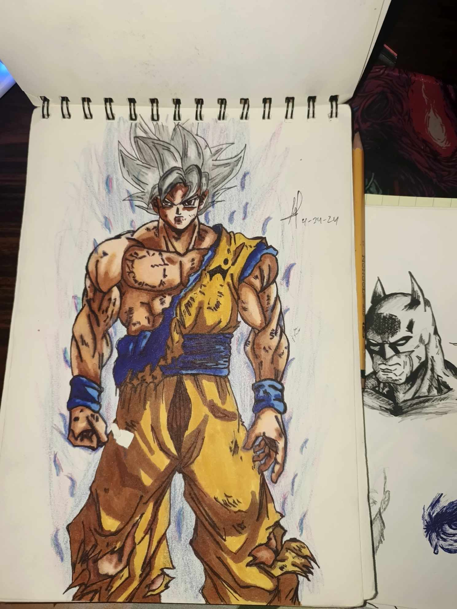
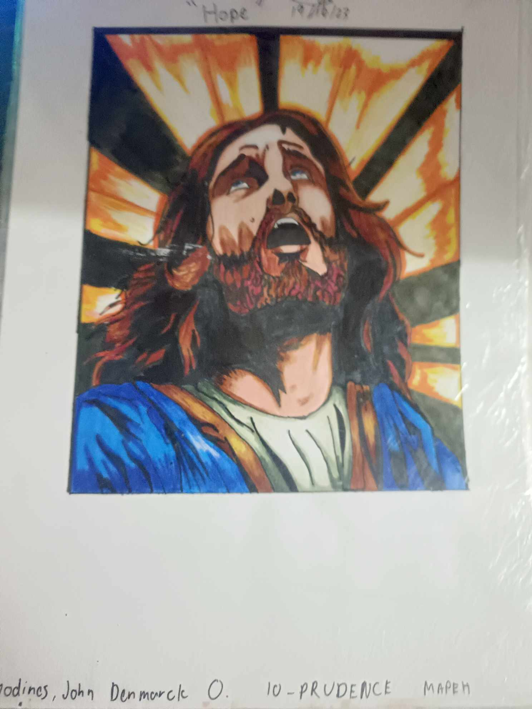
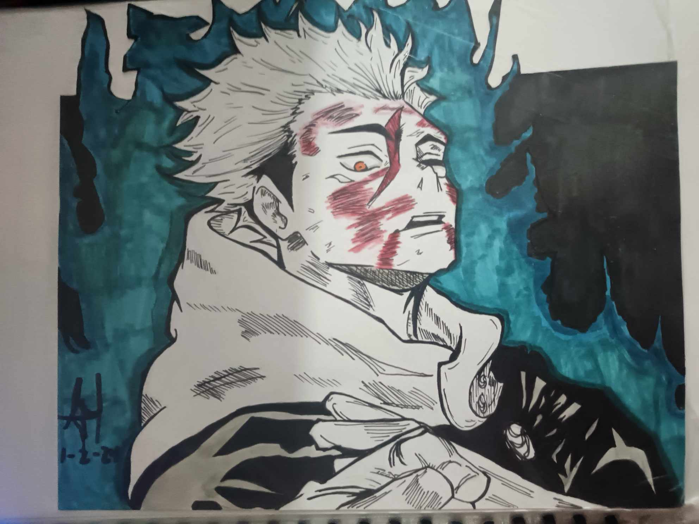
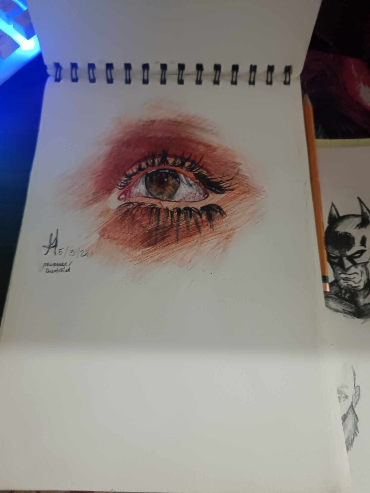
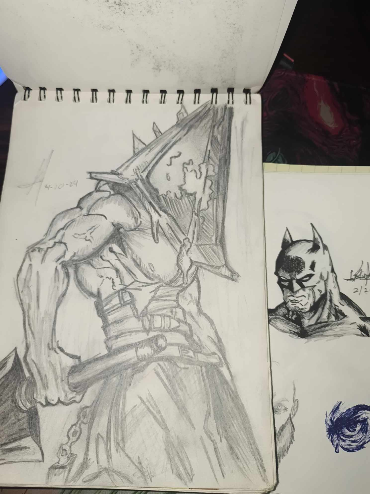
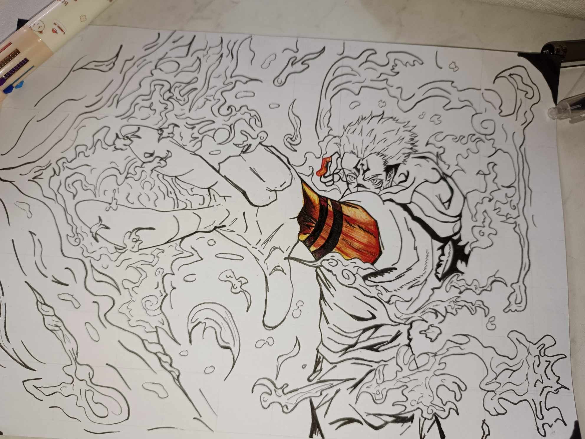

DRAWERIST GALLERY






My Drawing gallery, I learned how to draw caused by my anime addiction and game addiction, I started to draw in 2014 and its dragon ball from the dragon ball anime,
and it started out not too shabby lol. I practiced everytime I have a freetime and since then my art journey began to improve, it became my hobby and sorta like an addiction
because everytime i finish an work i always crave for another one even though I get an artblock I still continue to draw. I started learning to color and blend using colored pencil,
and then colored markers and I also tested out painting and found out that its much easier than drawing. Thats all...